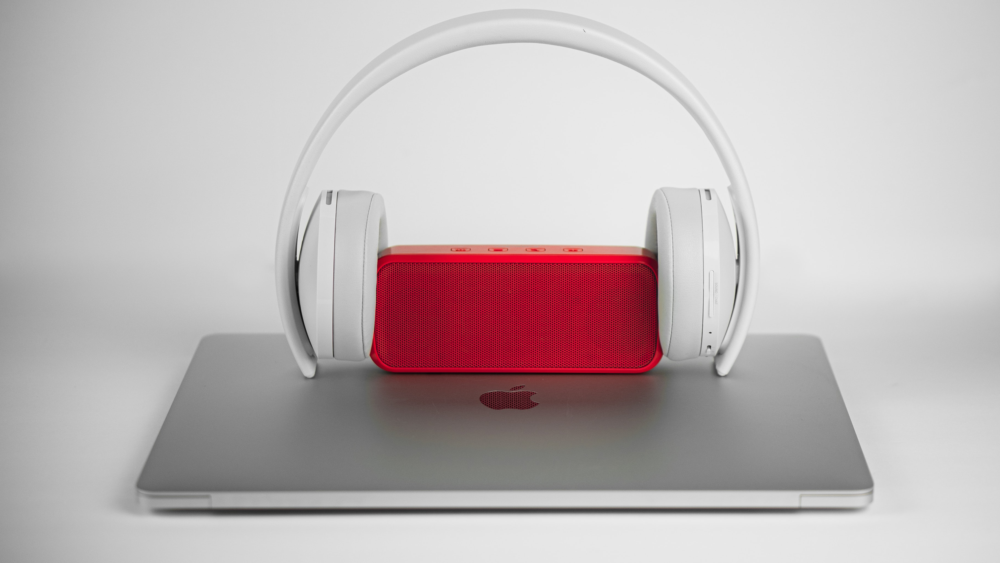

SPACESHIP GRADE ALUMINUM CASING ENSURES LONG-LASTING DURABILITY AND RELIABLE CHARGING.
Philips SHL3060BK
This DJ inspired headphone produces powerful sound and bass. The design with rotatable soft ear cups you enjoy on the go a perfect listening experience.
Sony MDR-7506
A clear punchy bass, lively mids and defined highs are part of the sound signature of every DT 240 PRO. Precise and powerful drivers provide high output levels on all devices such as laptops, cameras and studio interfaces. The DT 240 PRO what developed for producers, podcasters and filmmakers who want to make the most of their equipment.
Image Gallery


Colors
If you’re looking for an easy way to transform your mood, cue the music. Studies have shown that music can buoy your mood and fend off depression. It can also improve blood flow in ways similar to statins, lower your levels of stress-related hormones like cortisol and ease pain. Listening to music before an operation can even improve post-surgery outcomes